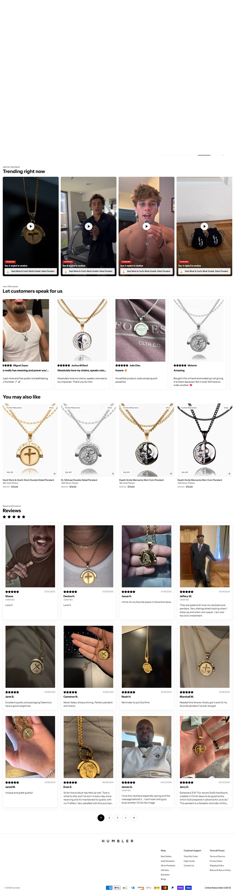

Fonte: coleção de best sellers pública da loja.
| # | Produto | Preço |
|---|---|---|
| 1 | Hard Work & God's Work Double Sided Pendant | $75.00 |
| 2 | St. Michael Double Sided Pendant | $75.00 |
| 3 | Death Smile Memento Mori Coin Pendant | $75.00 |
| 4 | Essential Cross Pendant | $75.00 |
| 5 | Icarus Double Sided Pendant | $75.00 |
| 6 | Spartan Skull Veni Vidi Vici Coin Pendant | $75.00 |
| 7 | Cuban 8mm Set | $94.00 |
| 8 | Perseus vs. Medusa Coin Pendant | $75.00 |
| Criativos únicos (amostra de 50 mais recentes) | 2 |
| Fator de duplicação | 25x (mesmo criativo repetido) |
| Anúncios por dia | 6.23/dia |
| Criativos únicos por semana | 1.74 |
| Janela da amostra | 8.03 dias |
| Mix de formato e sofisticação | Um único criativo de resposta direta escalado em massa + um criativo antigo de prova social ("Humbler™ - ⭐⭐⭐⭐⭐"). Sofisticação nível 1-2. |
Origem do tráfego: United States 41.49%, Brazil 10.54%, Spain 9.53%, United Kingdom 7.41%, Nigeria 6.35%, Others 24.68%.
1÷10,62% por construção (tautologia), não um achado.O que faz o campeão vender, decodificado dos criativos e do catálogo.
| Big idea / ângulo | Pingente de mitologia/filosofia como "lembrete diário" de disciplina masculina (stoicismo, fé, memento mori) — a joia é mantra, não moda. |
| Mecanismo único | Um único ângulo vencedor ("Your Daily Reminder") escalado em dezenas de cópias em vez de testar criativos novos — sofisticação de mídia madura, não de produto. |
| Formato de hook | "Your Daily Reminder is Now 30% Off." |
| Estrutura do presell | Catálogo de pingentes de dupla face (Perseus vs Medusa, David vs Golias) — a narrativa mitológica está no próprio produto. |
| Objeção principal | Preço ($55-94) vs. bijuteria genérica — sustentado por 1.116 reviews declarados na home (não verificados) e stack de prova social (Judge.me). |
O que copiar de cada página desta loja, pra levar ao Plano de Ação da Vyprro.
| Home — o que modelar | Print da home ao lado (seção 03) + 🏬 abrir home ↗. Modele esta home: "Your Daily Reminder is Now 30% Off." |
| PDP — o que modelar | Print da PDP ao lado (seção 03) — 🛍️ abrir PDP do campeão ↗. PDP pra modelar: Catálogo de pingentes de dupla face (Perseus vs Medusa, David vs Golias) — a narrativa mitológica está no próprio produto. |
| Dado | Motivo | Método tentado |
|---|---|---|
| Contagem de reviews | widget não expõe aggregateRating no HTML ou loja não usa review pública | JSON-LD + Judge.me API |
| Eixo | Pontos | Por quê |
|---|---|---|
| Sourcing simples | 1/2 | pingente double-sided é mais complexo de fabricar que bracelete simples |
| Ticket fecha sem escada | 2/2 | ticket $55-94 já fecha sozinho, sem precisar de bundle |
| Criativo simples de produzir | 0/2 | catálogo de 108 SKUs com narrativa mitológica exige curadoria de conceito, não é "sobe foto e testa" |
| Mecanismo com urgência | 1/2 | desconto recorrente (30% off), mas sem escassez real |
| Investimento de entrada baixo | 0/2 | stack de Klaviyo + Postscript + Triple Whale + Gorgias é operação madura, não ponto de partida |
| Sem dependência de autoridade | 1/2 | marca com 7 anos de catálogo (produto mais antigo 2019) e 1.116 reviews alegados — vantagem de tempo de mercado que um iniciante não tem |
Nível é etiqueta de "pra quem serve", não nota de corte: 10-12 iniciante, 6-9 médio, 0-5 avançado. Toda oportunidade de dropshipping vale, muda só o perfil de operador.
Um único ângulo vencedor ("Your Daily Reminder") escalado em dezenas de cópias em vez de testar criativos novos — sofisticação de mídia madura, não de produto.